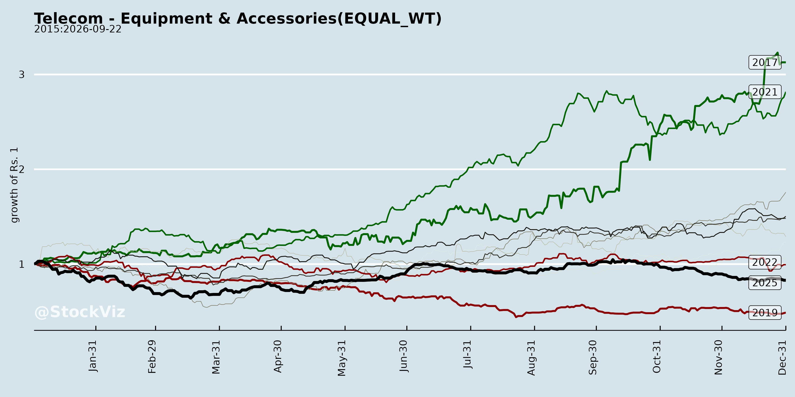
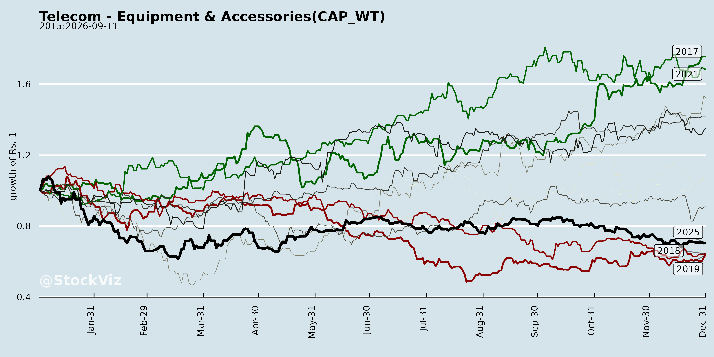
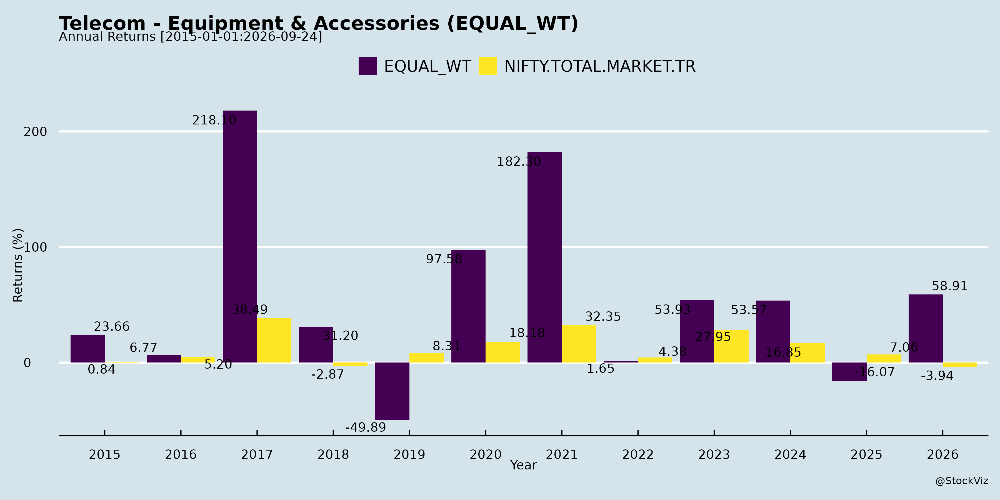
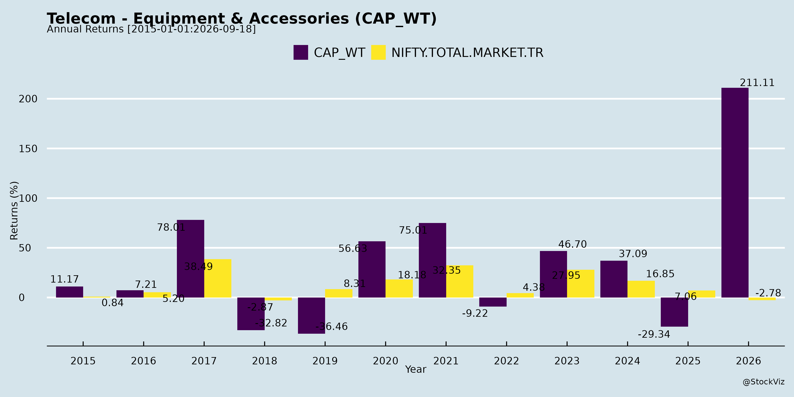
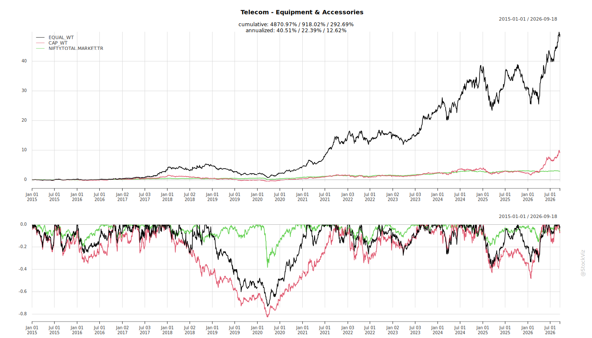
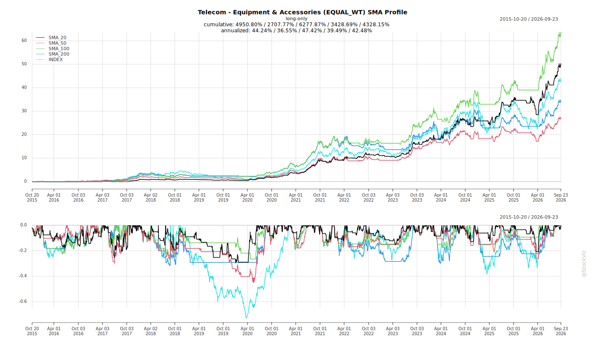
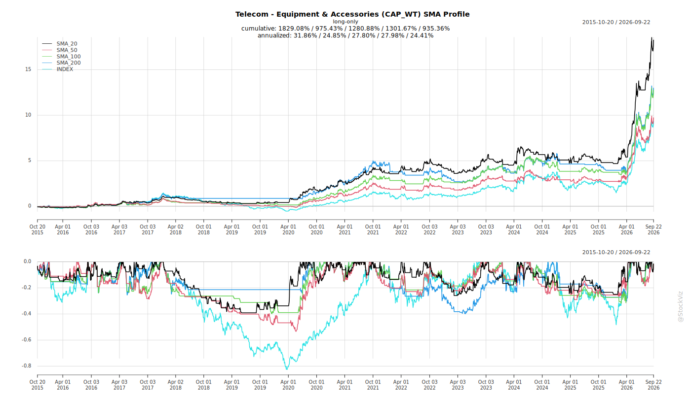
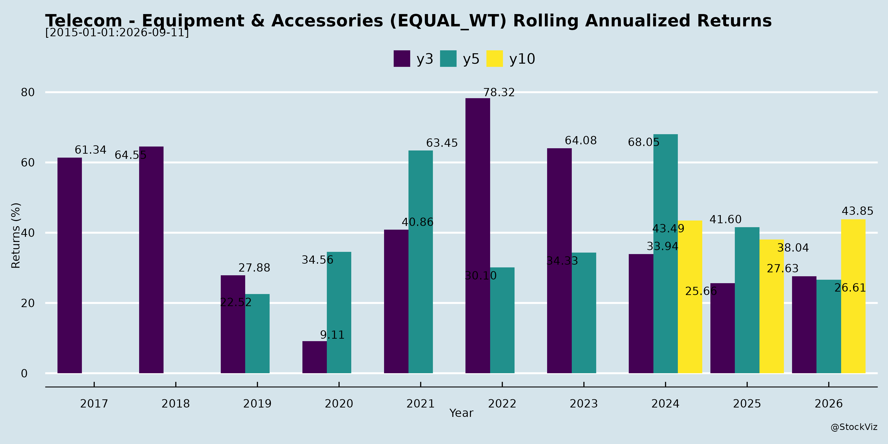
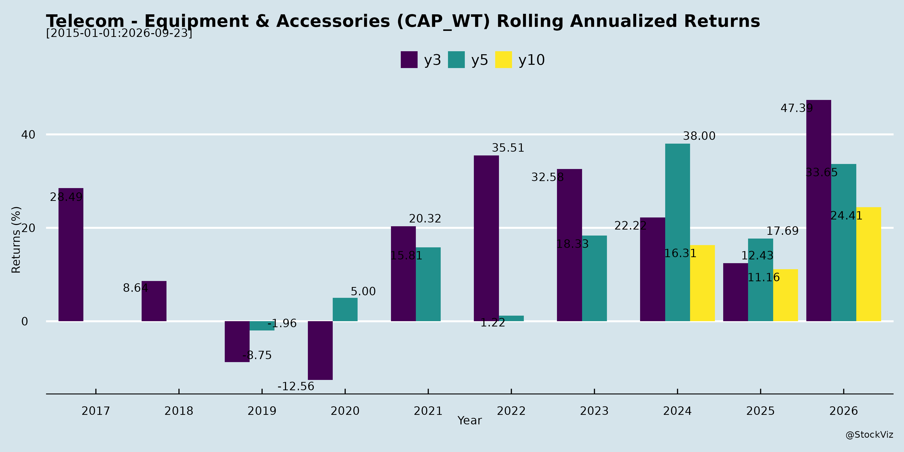

asof: 2025-11-27
Indian Telecom Equipment & Accessories Sector Analysis
Based on inputs from Optiemus Infracom, Sterlite Technologies Ltd (STL), and Tejas Networks documents (Q2 FY26 STL earnings transcript, investor meets/conferences).
The sector benefits from a global “super-cycle” in optical fiber communications (OFC), 5G, FTTH, and AI-driven data centers, with Indian players like STL (optical networking leader, ~7% global OFC share ex-China), Optiemus (telecom accessories/electronics), and Tejas Networks (networking gear) showing investor interest via meets/conferences. STL’s H1 FY26 results (revenue +6% YoY to Rs2,041cr, EBITDA margins +200bps to 14.1%) reflect resilience amid challenges.
Tailwinds
Headwinds
Growth Prospects
Key Risks
| Risk Category | Details | Mitigation |
|---|---|---|
| Trade/Geopolitical | US tariffs (50% on some; BTA talks ongoing); Mexico competition (price differential varies). Delays if unresolved. | Local US capacity ramp; multi-geo balance; BTA resolution expected Q3 FY26. |
| Legal/Financial | STL US court verdict ($96.5M; appeal filed, strong merits claimed). Net debt Rs1,313cr (D/E 0.64x, debt/EBITDA 2.33x). | Appeal process; debt reduction to <2x EBITDA target. No STL Networks interco exposure post-demerger. |
| Execution/Competition | Capacity utilization ramp (US plants); order postponement amid tariffs; rivals waiting for pricing clarity. | 2x order growth despite tariffs; R&D capex Rs115cr FY26; next-gen portfolio. |
| Macro | Demand postponement (US uncertainty); capex cycles delay. | Robust book provides visibility; broad-based inflows (Europe/US/India). |
Overall Outlook: Strong tailwinds from digital infra boom outweigh near-term tariff headwinds. Sector poised for 10-15%+ CAGR (STL-like), driven by exports (NA/Europe) and domestic 5G/DC. Monitor US trade talks for margin unlock; investor meets indicate positive sentiment. STL’s profitability turnaround (EBITDA +46% H1 YoY) sets benchmark.
asof: 2025-11-27
Summary Analysis: Indian Telecom Equipment & Accessories Sector
Based on the provided regulatory filings from key players (Aksh Optifibre, ITI Ltd., Kavveri Defence, Optiemus Infracom, Sterlite Technologies, Tejas Networks, Tamilnadu Telecom, Umiya Buildcon/MRO-TEK), the sector shows resilience amid compliance routines, strategic expansions, and funding activities. It benefits from telecom infra buildout (5G, fibre optics) but faces governance and execution hurdles. Below is a structured analysis of headwinds, tailwinds, growth prospects, and key risks.
Tailwinds (Positive Drivers)
Headwinds (Challenges)
Growth Prospects
Key Risks
Overall Outlook: Moderately positive with tailwinds from policy/manufacturing push outweighing governance headwinds. Growth hinges on 5G execution and indigenization; monitor Q3 FY26 filings for order wins. Sector PE likely 20-30x on infra theme, but select stocks (e.g., Tejas, Optiemus) for JV/upside.
asof: 2025-11-27
Summary Analysis: Indian Telecom Equipment & Accessories Sector
Using the provided documents from Optiemus Infracom (EMS for smartphones, wearables, fintech hardware), Sterlite Technologies (STL) (optical fiber/cables, data center solutions), and Tejas Networks (wireless/wireline telecom gear), here’s a sector-level analysis. These companies exemplify trends in manufacturing, optical infrastructure, and end-to-end telecom equipment, driven by 5G, AI/data centers, and indigenization.
Tailwinds (Positive Drivers)
Headwinds (Challenges)
Growth Prospects
Key Risks
Overall Outlook: Bullish on tailwinds from indigenization/5G-AI, with 20-30% sector growth potential FY26+. Risks mitigated by order books, PLI cashflows, and partnerships, but monitor BSNL execution and US trade resolution. Sector poised for $50B+ TAM capture via Make-in-India.
asof: 2025-11-27
Sector Analysis: Indian Telecom Equipment & Accessories
Overview: The provided documents highlight recent announcements from key players (ITI Limited, Optiemus Infracom, Sterlite Technologies/STL, Tejas Networks, Tamilnadu Telecommunications/TTL), focusing on partnerships, infrastructure upgrades, quantum tech, and government-backed projects. These indicate robust activity in optical networks, DWDM systems, quantum-secure communications, smart hardware, and digital transport solutions, aligning with India’s digital infrastructure push (e.g., Make in India, National Quantum Mission). Overall sentiment is positive, with tailwinds dominating, but execution and external dependencies pose challenges.
Tailwinds (Positive Drivers)
Headwinds (Challenges)
Growth Prospects
Key Risks
Summary Verdict: Strong tailwinds from govt initiatives and tech innovation outweigh headwinds, with high growth prospects in optical/quantum infra (projected 30%+ CAGR in segments). Risks center on execution and approvals—monitor Q2 results and project milestones for sustained momentum. Sector poised for 15-20% YoY growth if indigenization accelerates.
Copyright © 2023 SAS Data Analytics Pvt. Ltd. All rights reserved.